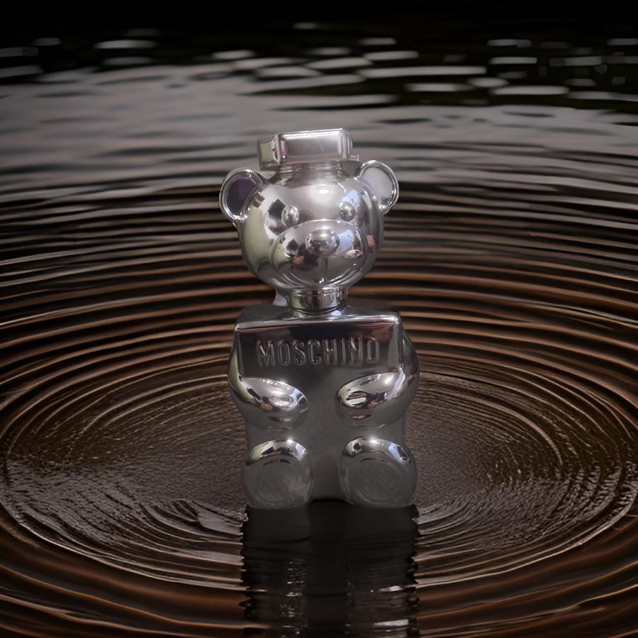

En el mundo de las fragancias existen dos grandes grupos para diferenciar las creaciones perfumistas, los perfumes de diseñador y perfumes nicho.
Primero aclararemos que uno no es mejor que el otro y empecemos por definir cada una, de manera sencilla, se entiende que una fragancia nicho es un perfume que es distribuido bajo una marca dedicada exclusivamente a al mundo de la perfumería (Creed, Amouage, Renier, Parfums de Marly...) o por autores independientes (ATH, Tauer, Daniel Josier,...).
Se caracterizan por ser composiciones diferentes a lo que sigue la tendencia en la perfumería, también los precios en los que se comercializan suelen ser mas altos debido a la calidad de ingredientes para las creaciones del Maestro perfumista.
Del otro lado tenemos la perfumería de diseñador, estas son marcas que comercializan mas productos además de perfumes (CHANEL, Yves Saint Laurent, Giorgio Armani, Versace...), son perfumes diseñados para gustar, fáciles de llevar y que siguen una tendencia en común.
También se encuentran las colecciones privadas de diseñador como la "Private Blend de Tom Ford" o "Maison Christian Dior de Dior" estas creaciones nos muestran composiciones artísticas exclusivas y con mejores ingredientes por parte de las casas de diseñador, que en muchos casos están a la par propuestas nicho.
